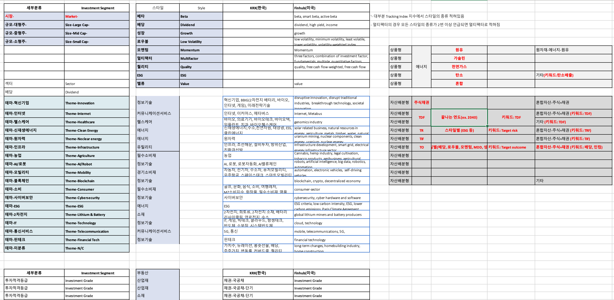
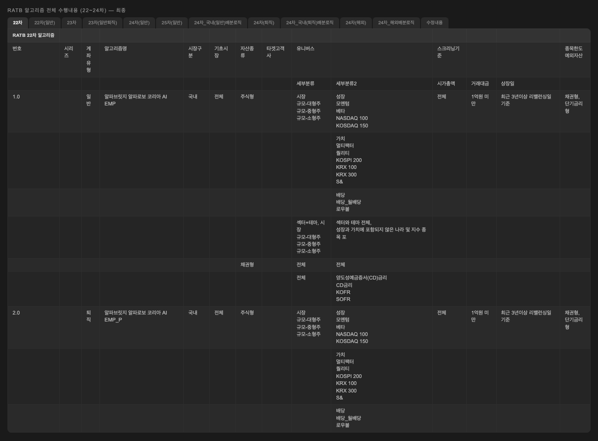
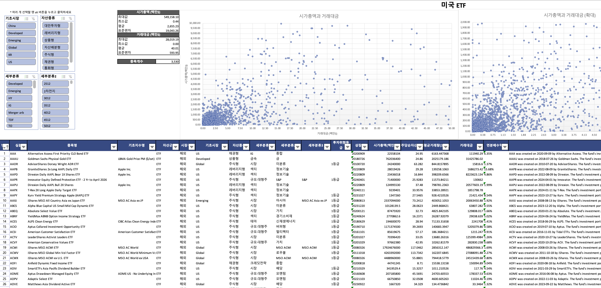
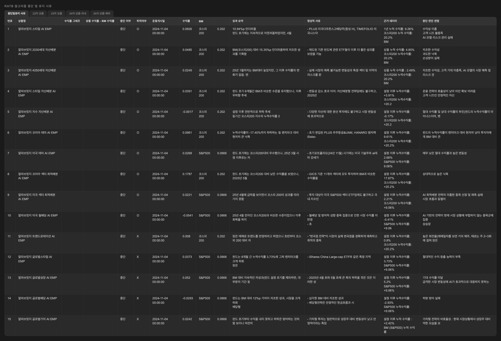

RATB 22–24차 · 로보어드바이저 운용심사
Context
입사 후 받은 첫 업무였습니다.
회사에서도 처음 도전하는 영역이었고,
참고할 선례도 정리된 프로세스도 없었습니다.
규제 기관 웹사이트의 공시 자료를 처음부터 끝까지 읽으며
심사 구조를 파악하는 것부터 시작했습니다.
일정과 필요 자료를 정리하고, 관리 체계는 시니어와 함께 설계했습니다.
필요하다고 판단한 프레임은 먼저 만들어 제안하는 방식으로 움직였습니다.
돌아보면 기획자로서 가장 많이 성장한 시간이었습니다.
RATB란: 금융위원회 산하 KOSCOM이 운영하는 로보어드바이저 테스트베드. AI 투자 알고리즘이 실제 고객 자금을 운용할 수 있는지 검증하는 국가 심사. 참여 신청(3주) → 사전심사(1개월) → 운용심사(6개월) → 사후심사(분기별). 2025년 퇴직연금 로보어드바이저 일임서비스의 필수 통과 조건.

판단 01
25개사, 185개 알고리즘이 참여하는 시장.
콴텍은 차수당 50개를 쏟아부었습니다.
후발주자였던 알파브릿지의 전략은 단순했습니다.
다양한 알고리즘을 빠르게 확보해서 존재감을 만든다.
방향은 맞았지만, 속도가 만들어내는 복잡도를 관리하는 건
전혀 다른 종류의 문제였습니다.
알고리즘 2개, 운용계좌 6개. 모든 상태가 머릿속에 있었습니다.
알고리즘 8개, 운용계좌 24개. 일반/연금 분리가 시작되면서 추적 시트가 등장했지만, 아직은 감당할 수 있는 범위였습니다.
28개 알고리즘이 한 차수에 추가되면서 운용계좌는 100개를 넘었습니다. 전략마다 제출 서류 4~5건, 직접 매매와 검증까지. 3개 차수가 동시에 진행되는 상황에서, 특정 전략의 현재 심사 단계를 즉시 파악하기 어려워졌습니다.
"A 알고리즘 지금 어느 단계예요?"
바로 답하지 못했습니다. 머릿속으로는 알고 있었지만, 정확히 정리된 건 아니었습니다. 서류 마감 하루 전에 빠진 항목이 발견된 적도 있었습니다. 그때 깨달았습니다. 이건 성실함의 문제가 아니라 구조의 문제라는 것.
리밸런싱이 있는 날에는 하루가 통째로 사라졌습니다.
전략별 매매 실행, 체결 확인, 결과 검증. 빠뜨릴 수 없지만 반복적인 작업이 시간을 잡아먹었습니다. 병목이 어디인지 분석하고 자동화 대상을 선별해 개발팀에 요건을 전달했습니다. 이후 리밸런싱 소요 시간은 하루 → 1~2시간으로 줄었습니다.


방향이 바뀌었을 때,
무엇을 남기고
무엇을 놓을지
근거를 만드는 역할.
판단 02
회사의 방향이 바뀌면서
38개 전략 전체를 다시 봐야 했습니다.
어떤 걸 남기고 어떤 걸 내릴지,
6개월치 운용 데이터를 펼쳐놓고 분석했습니다.
스타일 AI EMP는 벤치마크 대비 -10.94%p.
4월 급락 이후 끝내 회복하지 못했습니다.
미국 월배당은 -5.41%.
커버드콜의 구조적 한계로 어느 쪽에서도 불리했습니다.
반면 알파로보 배당은 23.08%.
분산투자와 명확한 배당 철학이 성과를 만들었습니다.
살아남은 전략의 공통점과 실패한 전략의 패턴을 정리한 뒤,
최종적으로 RATB 전략 전체를 종료하고
새로운 방향에 자원을 집중하는 결정이 내려졌습니다.
전략 유지/중단 분석 기준
벤치마크 대비 수익률, 최대 낙폭, 회복 추세. 알파로보 배당은 23.08%로 최고 성과.
시장 구조가 바뀌었는가? 전략의 전제가 여전히 유효한가? 유지 비용 대비 가치는?
충분한 분산, 명확한 전략 정체성, 적절한 리밸런싱 빈도 (과잉 반응 없음)
하락장 리스크 관리 실패, 구조적 한계 (커버드콜 상승 제한), 신호 지연

판단 03
심사 과정에는 두 차례의 공식 발표가 있었습니다.
전략 설계부터 매매, 리밸런싱까지 전체 운용 흐름을 설명하는 역할을 맡아
발표를 주도했습니다.
"투자성향 질문지의 설계 근거와 점수 체계의 산정 로직을 설명해주세요."
퇴직연금에 편입되는 상품이기 때문에, 투자자 성향을 분류하는 질문지가 필수였습니다.
심사관은 결과물이 아니라 그 뒤의 설계 논리를 물었습니다.
업계에서 사용되는 다양한 투자성향 설문을 비교 분석한 뒤, 공통 항목을 추출하고
투자자의 리스크 허용 범위를 직관적으로 판별할 수 있는 문항 구조로 재설계했습니다.
점수 산정 역시 동일한 벤치마크 기반 접근으로 설계 근거를 제시했습니다.
개발자용 흐름도를 심사관에게 보여줬습니다. DB 스키마, API 엔드포인트, 큐 시스템.
잠깐 정적이 흘렀습니다. 그 몇 초가 꽤 길게 느껴졌습니다. 처음부터 다시 설명해야 했습니다. 그 이후로 같은 로직을 심사관용 프로세스 다이어그램으로 다시 그렸습니다. 시장 데이터 → AI 분석 → 포트폴리오 → 리밸런싱 → 주문. 각 단계에 자동/수동 마커와 예외 경로를 표시했습니다.
심사관의 질문에는 일관된 패턴이 있었습니다.
"무엇을 만들었는가"가 아니라 "왜 이렇게 설계했는가".
그 이후로 기획서를 쓸 때 "무엇을 만드는가" 전에
"왜 이렇게 설계했는가"를 먼저 씁니다.
Reflection
1년 반 동안 심사관 앞에서 기획서를 검증받으면서 생긴 습관들이 있습니다.
의식적으로 하는 게 아니라 몸에 밴 것들입니다.
"비중 이탈 시 리밸런싱 실행". 이 한 줄에서 돌아온 질문: 목표비중은 종목별인가 전략 단위인가? 이탈 기준은 절대값인가 상대값인가? 감지 주기는? 감지 시 즉시 실행인가? 이탈 종목만 조정인가 전체 리밸런싱인가? 한 줄이 다섯 개의 의사결정으로 쪼개졌습니다.
→ 현재 대시보드 기획에서도 로드 실패, 빈 결과, 비정상 파라미터를 정상 케이스보다 먼저 정의합니다.
동일한 리밸런싱 로직이 심사관에게는 설계 판단의 근거, 개발자에게는 구현 요건, 퀀트에게는 전략 정합성 검증 대상이 됩니다.
→ 기획서 작성 전에 "이 문서의 독자가 내릴 판단이 무엇인가"를 먼저 정의합니다.
2개에서 통한 방식이 8개에서 흔들렸고, 8개에서 버틴 구조가 38개에서 무너졌습니다. 현재 방식이 깨지는 임계점을 미리 식별하는 것이 설계의 시작점입니다.
→ 전략 관리 체계와 유니버스 분류 구조를 설계할 때 확장 시나리오를 전제로 잡습니다.
각 판단의 더 깊은 맥락은
블로그 RATB 시리즈 5편에서 다루고 있습니다.